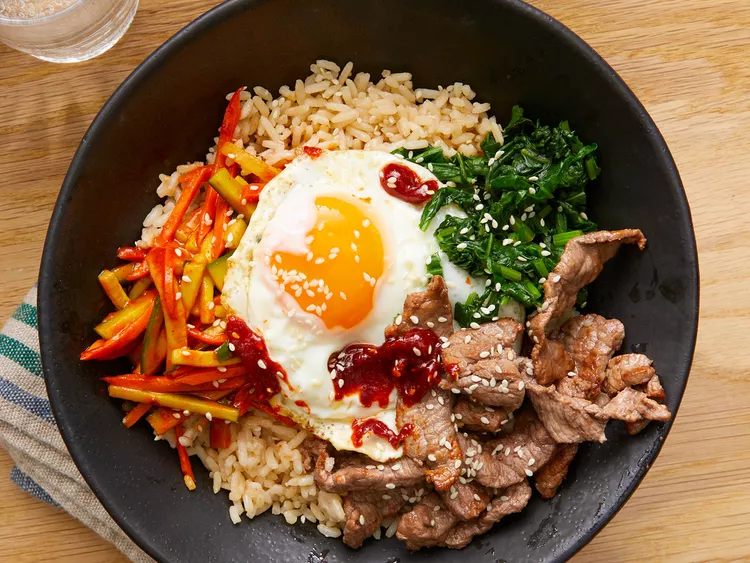

Bibimbap

Description
Easy to make world class lasgna that's completely customizable and suitable for any tastebud!
Ingredients
- 1 English cucumber
- 1/4 cup gochujang
- 1 bunch fresh spinach
- 1 tablespoon soy sauce
- 2 teaspoons olive oil
- 2 carrots
- 1 clove garlic
- 1 pinch red pepper flakes
- 1 pound thinly-sliced beef top round steak
- 4 large eggs
- 4 cups cooked white rice
- 4 teaspoons toasted sesame oil
- 1 teaspoon sesame seeds
- 2 teaspoons gochujang
Directions
- Stir together cucumber pieces and gochujang paste in a bowl; set aside.
- Bring about 2 cups of water to a boild in a large nonstick skillet and stiry in spinach;
cook until bright green and wilted, 2 to 3 minutes.
- Drain spinach and squeeze out as much moisture as possible;
set spinach aside in a bowl and stir in soy sauce.
- Heat 1 teaspoon olive oil in a large nonstick skillet;
cook and stir carrots until softened, about 3 minutes.
- Stir in garlic and cook just until fragrant, about 1 minute. Stir in cucumber mixture;
sprinkle with red pepper flakes. Set carrot mixture aside in a bowl.
- Brown beef in a clean nonstick skillet over medium heat, about 5 minutes per side set aside.
- Heat remaining 1 teaspoon olive oil in another nonstick skillet over medium-low heat.
Fry eggs just on one side until yolks are runny, 2 to 4 minutes.
- Divide cooked rice into 4 large serving bowls; top with spinach mixture, a few pieces of beef,
and cucumber mixture.Place 2 egg atop each serving. Drizzle each bowl with 1 teaspoon sesame oil,
a sprinkle of sesame seeds, and a small amount of gochujang paste.